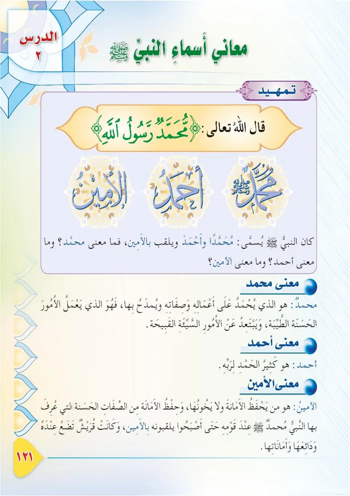
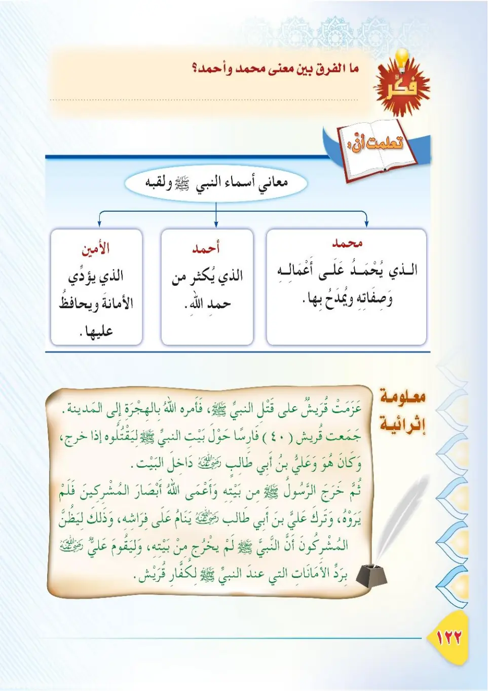
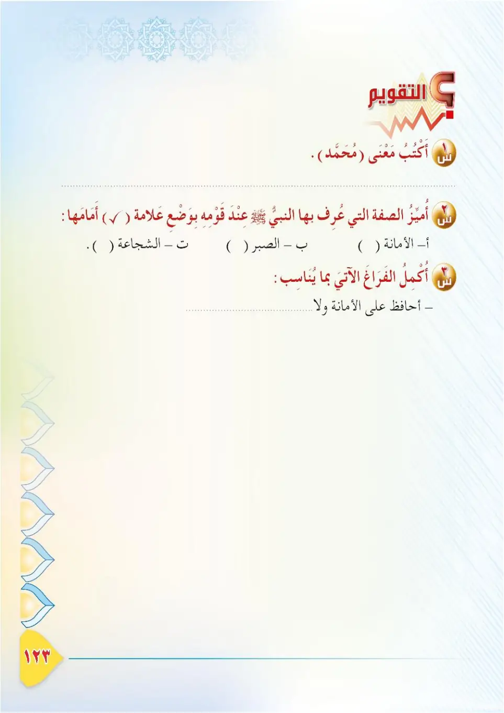
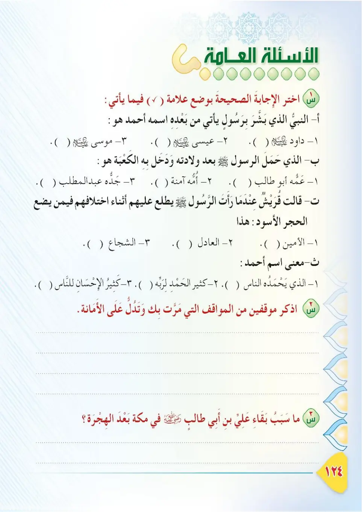
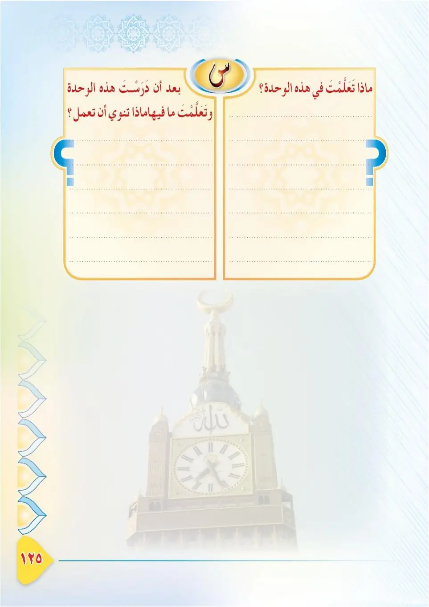
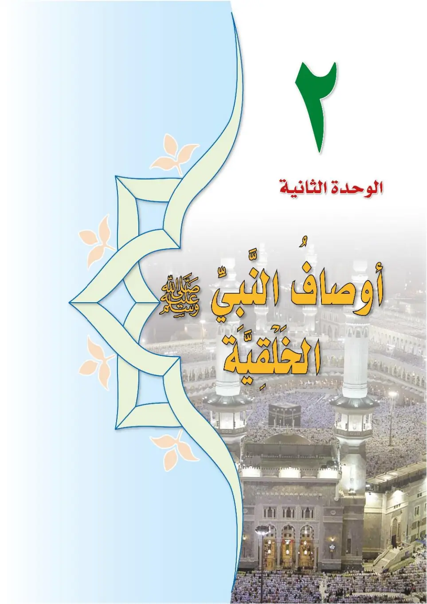
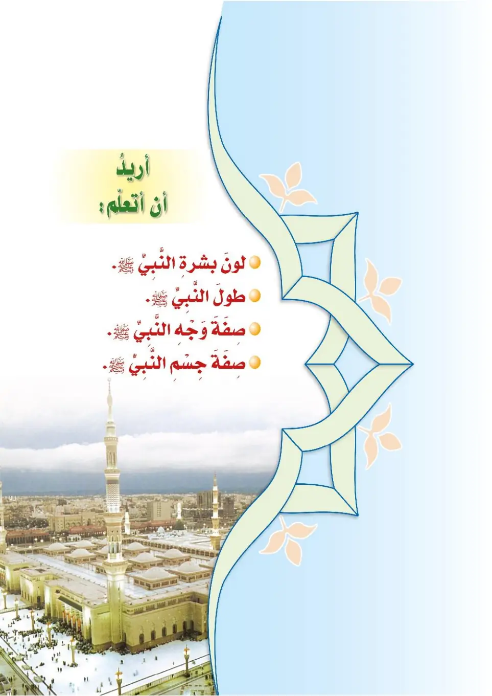

Stage 3·المرحلة الثالثة📖 Unit 1
مَعَانِي أَسْمَاءِ النَّبِيِّ ﷺ The Meanings of the Prophet's Names ﷺ
From the Textbookpp. 122–128







كَانَ النَّبِيُّ ﷺ يُسَمَّى: مُحَمَّدًا، وَأَحْمَدَ، وَيُلَقَّبُ بِالْأَمِينِ. فَمَا مَعْنَى مُحَمَّدٍ؟ وَمَا مَعْنَى أَحْمَدَ؟ وَمَا مَعْنَى الْأَمِينِ؟
Kana an-nabiyyu ﷺ yusamma: Muhammadan, wa Ahmada, wa yulaqqabu bil-Ameen. Fama ma'na Muhammad? Wa ma ma'na Ahmad? Wa ma ma'na al-Ameen?
The Prophet ﷺ was called Muhammad and Ahmad, and nicknamed Al-Ameen. So what is the meaning of Muhammad? What is the meaning of Ahmad? And what is the meaning of Al-Ameen?
நபி ﷺ அவர்கள் 'முஹம்மது', 'அஹ்மத்' என்று அழைக்கப்பட்டார்கள்; 'அல்-அமீன்' என்ற பட்டம் பெற்றிருந்தார்கள். 'முஹம்மது' என்பதன் பொருள் என்ன? 'அஹ்மத்' என்பதன் பொருள் என்ன? 'அல்-அமீன்' என்பதன் பொருள் என்ன?
مَعْنَى مُحَمَّدٍ: هُوَ الَّذِي يُحْمَدُ عَلَى أَعْمَالِهِ، وَيُمْدَحُ بِصِفَاتِهِ الْحَسَنَةِ؛ فَهُوَ الَّذِي يَعْمَلُ الْأُمُورَ الْحَسَنَةَ الطَّيِّبَةَ، وَيَبْتَعِدُ عَنِ الْأُمُورِ السَّيِّئَةِ الْقَبِيحَةِ.
Ma'na Muhammad: huwa alladhi yuhmadu 'ala a'malih, wa yumdahu bi-sifatih al-hasanah; fahuwa alladhi ya'malu al-umura al-hasanata at-tayyibah, wa yabta'idu 'ani al-umuri as-sayyi'ati al-qabihah.
The meaning of Muhammad: he who is praised for his deeds and commended for his noble qualities — one who does good, fine deeds and keeps away from evil, foul deeds.
'முஹம்மது' என்றால்: தன் செயல்களுக்காகப் புகழப்படுபவர்; நல்ல பண்புகளுக்காகப் போற்றப்படுபவர். நல்ல, அழகான செயல்களைச் செய்து, கெட்ட, இழிவான செயல்களை விட்டு விலகுபவர்.
مَعْنَى أَحْمَدَ: هُوَ الْكَثِيرُ الْحَمْدِ لِرَبِّهِ جَلَّ وَعَلَا، فَلَا يَفْتُرُ لِسَانُهُ عَنْ حَمْدِهِ وَشُكْرِهِ.
Ma'na Ahmad: huwa al-kathiru al-hamdi li-rabbihi jalla wa 'ala, fala yafturu lisanuhu 'an hamdihi wa shukrih.
The meaning of Ahmad: he who frequently praises his Lord, the Exalted and Majestic — his tongue never tires of praising and thanking Him.
'அஹ்மத்' என்றால்: தன் இறைவனை அதிகமாகப் புகழ்பவர்; அவனைப் புகழ்வதிலும் நன்றி செலுத்துவதிலும் நாவு சோர்வதில்லை.
مَعْنَى الْأَمِينِ: هُوَ الَّذِي يَحْفَظُ الْأَمَانَةَ وَلَا يَخُونُهَا. وَكَانَ النَّبِيُّ ﷺ حَافِظًا لِلْأَمَانَةِ حَتَّى لَقَّبَتْهُ قُرَيْشٌ بِالْأَمِينِ، وَكَانَتْ قُرَيْشٌ تَضَعُ عِنْدَهُ وَدَائِعَهَا وَأَمَانَاتِهَا.
Ma'na al-Ameen: huwa alladhi yahfazu al-amanata wa la yakhunuha. Wa kana an-nabiyyu ﷺ hafizan lil-amanati hatta laqqabathu Qurayshun bil-Ameen, wa kanat Qurayshun tada'u 'indahu wada'i'aha wa amanatiha.
The meaning of Al-Ameen: he who preserves the trust and does not betray it. The Prophet ﷺ was a preserver of trusts until the Quraysh nicknamed him Al-Ameen, and they would leave their deposits and valuables with him.
'அல்-அமீன்' என்றால்: அமானிதத்தைப் பாதுகாப்பவர்; மோசடி செய்யாதவர். நபி ﷺ அமானிதத்தைப் பாதுகாப்பவராக இருந்ததால் குறைஷியர் அவர்களை 'அல்-அமீன்' என்று அழைத்தனர்; தம் வைப்புகளையும் பொருட்களையும் அவரிடம் வைத்தனர்.
الْفَرْقُ بَيْنَ مَعَانِي الْأَسْمَاءِ: ١- مُحَمَّدٌ: الَّذِي يَحْمَدُهُ النَّاسُ عَلَى أَخْلَاقِهِ الْحَسَنَةِ وَأَعْمَالِهِ الطَّيِّبَةِ. ٢- أَحْمَدُ: الَّذِي يُكْثِرُ حَمْدَ رَبِّهِ. ٣- الْأَمِينُ: الَّذِي يَحْفَظُ الْأَمَانَةَ وَيُؤَدِّيهَا إِلَى أَهْلِهَا.
Al-farqu bayna ma'ani al-asma': 1. Muhammadun: alladhi yahmaduhu an-nasu 'ala akhlaqih al-hasanah wa a'malih at-tayyibah. 2. Ahmadu: alladhi yakthuru hamda rabbih. 3. Al-Ameenu: alladhi yahfazu al-amanata wa yu'addiha ila ahliha.
The difference between the meanings of the names:
1. Muhammad: the one whom people praise for his noble character and good deeds.
2. Ahmad: the one who frequently praises his Lord.
3. Al-Ameen: the one who preserves the trust and returns it to its owners.
பெயர்களின் பொருள் வேறுபாடு:
1. முஹம்மது: நல்ல பண்பு, நல்ல செயல்களுக்காக மக்கள் புகழ்பவர்.
2. அஹ்மத்: தன் இறைவனை அதிகம் புகழ்பவர்.
3. அல்-அமீன்: அமானிதத்தைப் பாதுகாத்து உரியவரிடம் ஒப்படைப்பவர்.
مَعْلُومَةٌ إِثْرَائِيَّةٌ: عَزَمَتْ قُرَيْشٌ عَلَى قَتْلِ النَّبِيِّ ﷺ، فَأَمَرَهُ اللهُ بِالْهِجْرَةِ إِلَى الْمَدِينَةِ، وَأَخْبَرَهُ أَنَّ عَلِيًّا رَضِيَ اللهُ عَنْهُ سَيَبِيتُ فِي مَكَانِهِ. جَمَعَتْ قُرَيْشٌ حَوْلَ بَيْتِ النَّبِيِّ ﷺ، فَأَمَرَ النَّبِيُّ ﷺ عَلِيًّا أَنْ يَنَامَ عَلَى فِرَاشِهِ، وَخَرَجَ ﷺ مِنْ بَيْتِهِ فَأَعْمَى اللهُ أَبْصَارَ الْمُشْرِكِينَ. وَبَقِيَ عَلِيٌّ فِي مَكَانِهِ لِيَرُدَّ الْأَمَانَاتِ الَّتِي كَانَتْ عِنْدَ النَّبِيِّ ﷺ إِلَى أَهْلِهَا.
Ma'lumatun ithra'iyyah: 'azamat Qurayshun 'ala qatli an-nabiyyi ﷺ, fa'amarahu Allahu bil-hijrati ila al-Madinah. Jama'at Qurayshun hawla bayti an-nabiyyi ﷺ, fa'amara an-nabiyyu ﷺ 'Aliyyan an yanama 'ala firaashih, wa kharaja ﷺ min baytih fa'a'ma Allahu absara al-mushrikeen. Wa baqiya 'Aliyyun fi makanih li-yarudda al-amanati allati kanat 'inda an-nabiyyi ﷺ ila ahliha.
Enrichment: The Quraysh resolved to kill the Prophet ﷺ, so Allah commanded him to migrate to Madinah and informed him that 'Ali, may Allah be pleased with him, would sleep in his place. The Quraysh gathered around the Prophet's house, so the Prophet ﷺ ordered 'Ali to sleep on his bed, and he left his house while Allah blinded the eyes of the polytheists. 'Ali remained in his place to return the deposits that were kept with the Prophet ﷺ to their owners.
செறிவூட்டல்: நபி ﷺ அவர்களைக் கொல்ல குறைஷியர் திட்டமிட்டனர். அல்லாஹ் மதீனாவுக்கு ஹிஜ்ரத் செய்யும்படி கட்டளையிட்டு, அலி (ரலி) அவர்கள் அவரது இடத்தில் தூங்குவார் என்று அறிவித்தான். நபி ﷺ அவர்களின் வீட்டைச் சுற்றி குறைஷியர் கூடினர். நபி ﷺ அலி (ரலி) அவர்களை தம் படுக்கையில் தூங்கும்படி கட்டளையிட்டு, வீட்டை விட்டு வெளியேறினார்கள்; முஷ்ரிக்குகளின் கண்களை அல்லாஹ் குருடாக்கினான். நபியிடம் இருந்த அமானிதங்களை உரியவர்களிடம் ஒப்படைக்க அலி தம் இடத்தில் தங்கினார்.